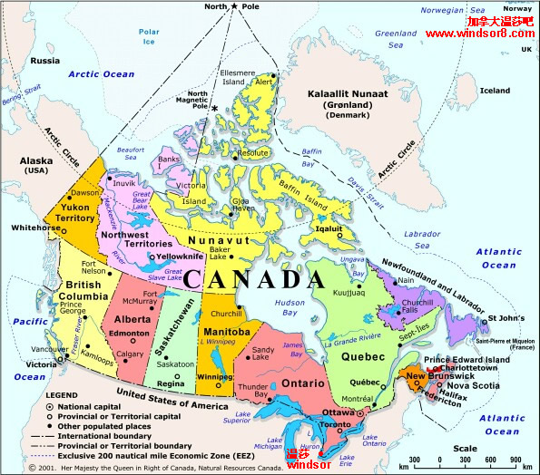

本部分FLYabroad会介绍加拿大各省和华人聚集较多的城市，包括气候，工作，移民，人口，华人数量等移民朋友关心的问题。这里的数据都是参照加拿大官方发布的最新数据【2007-12】。
New ! 2008 年加拿大各省最新家庭类担保移民(Family Class)！
加拿大自然地理
加拿大面积为998万平方公里，居世界第二位。位于北美洲北部（除阿拉斯加半岛和格棱兰岛外，整个北半部均为加拿大领土）。东临大西洋，西濒太平洋，南界美国本土，北靠北冰洋。西北与美国的阿拉斯加州接壤，东北隔巴芬湾与格陵兰岛相望。海岸线约长２４万多公里。东部为丘陵地带，南部与美国接壤的大湖和圣劳伦斯地区，地势平坦，多盆地。西部为科迪勒拉山区，是加拿大最高的地区，许多山峰在海拔4千米以上。北部为北极群岛，多系丘陵低山。中部为平原区。最高山洛根峰，位于西部的洛基山脉，海拔为5951米。加拿大是世界上湖泊最多的国家之一。因受西风影响，加大部分地区属大陆性温带针叶林气候。东部气温稍低，南部气候适中，西部气候温和湿润，北部为寒带苔原气候。北极群岛，终年严寒。
加拿大境内多枫树，每到秋天，满山遍野的枫叶或呈橘黄，或显嫣红，宛如一堆堆燃烧的篝火，因此加拿大有“枫叶之国”的美誉。加拿大国旗上的枫叶代表了加拿大人对枫叶的钟爱。
加拿大人口
截止2007年7月1日，加拿大统计局统计的加拿大人口总数为3297.6万。其中，英语为母语的居民占 57.2%，法语为母语的居民约占 21.8% 。根据2006年数据，加拿大讲汉语人口达到1,034,090人，占加拿大总人口的3.3%。加拿大居民以英裔和法裔居民为主，其他欧洲人后裔占１３％，土著居民（印第安人、米提人和因纽特人）约占３％，其余为亚洲、拉美、非洲裔等。其中华裔人口已占加拿大总人口的3.3％，成为加拿大最大的少数族裔，即白种人和原住民以外的最大族裔。华裔人口中25％的人是在加拿大本土出生的，其余大部分来自中国大陆、香港和台湾。英语和法语同为官方语言。居民中信奉天主教的占47.3％，信基督教新教的占41.2％。
加拿大首都
渥太华（Ottawa），地处安大略省。首都地区（包括安大略省的渥太华市、魁北克省的赫尔市和其周围城镇)人口1,117,120 万（2007年），面积4662平方公里。
加拿大各省介绍：加拿大行政区划
加拿大分成十个省和三个地区。省拥有从联邦政府中获得的相当大的自治权，而特区则比较少。每个省和地区都有一个单院议会。
安大略省（Ontario）
艾伯塔省 / 亚伯特省 （Alberta）
不列颠哥伦比亚省 / 卑诗省（British Columbia）
曼尼托巴省 / 马尼托巴省（Manitoba）
纽芬兰与拉布拉多省（Newfoundland and Labrador）
新不伦瑞克省 / 纽宾士域省（New Brunswick）
新斯科舍省 / 诺瓦斯克舍省（Nova Scotia）
爱德华王子岛省（Prince Edward Island）
萨斯喀彻温省（Saskatchewan）
魁北克省（Quebec）
西北地区（Northwest Territories）
育空地区（Yukon）
努纳武特地区（Nunavut）

1998–2007 加拿大各类移民人数统计（Permanent Residents by Category） ；
1998–2007 加拿大新移民定居城市人数统计（by Province or Territory and Urban Area） ；
参考：
省提名技术移民 - FLYabroad 加拿大省提名技术移民个人代理自助服务及服务费用 ；
FLYabroad 将在留学版块专门介绍中国留学生关心的加拿大著名大学：加拿大大学索引目录 NEW！。
加拿大人口数量及加拿大各省人口分布表（2003年-2007年）；
加拿大以英语为母语的人口数量统计（1996，2001，2006）；
加拿大以法语为母语的人口数量统计（1996，2001，2006）；
加拿大非官方母语人口比例（1971，2001，2006） - 汉语人口比例，意大利语人口比例，德语人口比例 。
2008 年加拿大移民配额：省提名移民配额增加 ；
加拿大省提名技术移民 。